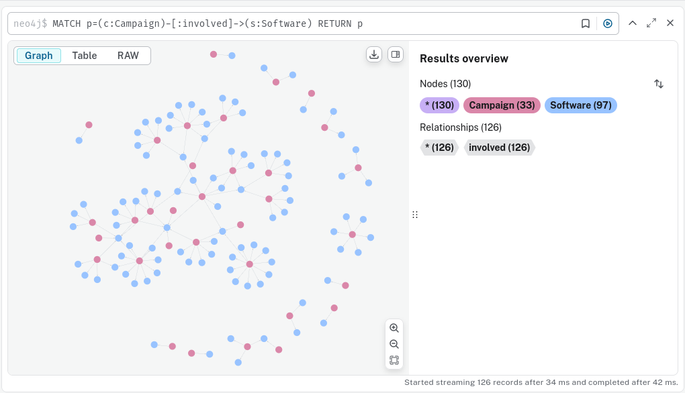

DB Project: Cybersecurity Knowledge Base
Table of Contents
- 1. Requirements Analysis and Conceptual Design
- 2. Dataset
- 3. Scripts for data insertion
- 4. Querying
- 4.1. Get all mitigations for a certain technique
- 4.2. All software ever used in a documented APT campaign
- 4.3. All mitigations associated with a certain tactic
- 4.4. * Get all mitigations for a specific technique
- 4.5. Find all subtechniques for a technique
- 4.6. Get all tactics and their techniques
- 4.7. Find all software used by a group
- 4.8. Get all campaigns involving a specific group
- 4.9. Find all techniques/subtechniques in a specific campaign
- 4.10. Get all associated groups for a specific group
- 4.11. Find all groups using techniques mitigated by specific mitigations
- 4.12. Get all campaigns that use software implementing techniques in a specific tactic
- 4.13. Find all tactics that indirectly involve a specific campaign through groups and techniques
- 4.14. Retrieve subtechniques and their parent techniques, but only if both are used in the same campaign
- 4.15. Find all mitigations that impact software used in campaigns involving specific groups
- 4.16. And so on.
- 5. Report generation
- 6. Performance Tuning
- 7. Project Documentation
1. Requirements Analysis and Conceptual Design
1.1. Cybersecurity Knowledge Base
The MITRE ATT&CK Matrix is a structured framework that organizes Tactics, Techniques, and Subtechniques used by adversaries, including Advanced Persistent Threats (APTs), to exploit vulnerabilities like Common Vulnerabilities and Exposures (CVEs)
1.2. Purpose
This knowledge base aims to help cybersecurity professionals:
- understand the goals and methods of cybersecurity threats
- identify what mitigations can be used for threats
- get background knowledge of active APT groups as well as previous campaigns
- get information about a specific malicious software
1.3. Key Components
- Tactics - The high level objectives of a threat actor.
- Example: The tactic “Execution” (TA0002) involves the execution of malicious code on a target machine.
- Techniques - Refers to how adversaries achieve their tactics.
- Example: The technique “Scheduled Task Job (T1053)” under “Execution” (TA0002) refers to abusing task-scheduling functions to execute malicious code.
- Subtechniques - Refers to specific implementations of a technique
- Example: A subtechnique of T1053 is “Systemd Timers” (T1053.006). Systemd timers are unit files used to control
- Mitigations - how to defend against threats
- Software - tools used by threats
- Groups - an APT group; typically acts in a campaign and uses similar techniques and software
- Campaigns - a specific period of cybersecurity attack; like 2015 Ukraine Hacks
1.4. Conceptual Design
A knowledge base is best represented as a knowledge graph. So, we will use a graph database `neo4j`.
A node will be labeled tactic, technique… so on, and will have properties such as a name. Nodes are connected to another node via a “relationship” - a relationship has a name and can have attributes such as ’relation description’.
We have a list of nodes (bolded) and relationships (unbolded).
- associated-group
- campaigns
- campaigns-groups
- campaigns-software
- campaigns-subtechniques
- campaigns-techniques
- groups-associated-groups
- groups-software
- groups-subtechniques
- groups-techniques
- mitigations
- mitigations-subtechniques
- mitigations-techniques
- software
- software-subtechniques
- software-techniques
- subtechniques
- subtechniques-techniques
- tactics
- tactics-techniques
- techniques
- groups
Basically, tactics have techniques. Techniques have subtechniques. Campaigns involve the use of certain groups, software, subtechniques or techniques. Groups are associated to other miinor groups “associated group” - they aren’t considered their own APT. Groups use certain software, subtechniques, and techniques. Mitigations mitigate techniques and subtechniques. Software uses certain techniques and subtechniques.
The data comes as an .xlsx from MITRE ATT&CK.
1.5. Entity-Relationship Diagram
1.6. Normalization
- See: notebook.ipynb for examples
- We explode (create a new row for each item in a list) multi-valued columns like “associated groups” (for the table Group) and make it their own table.
- techniques.xlsx used to have an attribute “is subtechnique” and “subtechnique of” - we normalize by retrieving all subtechniques and placing them in their tables
1.7. Database Schema
Since I am using `neo4j`, the database language is `Cypher`. Here is how I created the nodes and relationships. This is the generated import code and also code for defining the nodes, relationships and properties/attributes (e.g. schema)
// CONSTRAINT creation
// -------------------
// Create node uniqueness constraints, ensuring no duplicates for the given node label and ID property exist in the database. This also ensures no duplicates are introduced in future.
//
CREATE CONSTRAINT `ID_Technique_uniq` IF NOT EXISTS
FOR (n: `Technique`)
REQUIRE (n.`ID`) IS UNIQUE;
CREATE CONSTRAINT `ID_Tactic_uniq` IF NOT EXISTS
FOR (n: `Tactic`)
REQUIRE (n.`ID`) IS UNIQUE;
CREATE CONSTRAINT `ID_Subtechnique_uniq` IF NOT EXISTS
FOR (n: `Subtechnique`)
REQUIRE (n.`ID`) IS UNIQUE;
CREATE CONSTRAINT `ID_Group_uniq` IF NOT EXISTS
FOR (n: `Group`)
REQUIRE (n.`ID`) IS UNIQUE;
CREATE CONSTRAINT `ID_Software_uniq` IF NOT EXISTS
FOR (n: `Software`)
REQUIRE (n.`ID`) IS UNIQUE;
CREATE CONSTRAINT `associated_id_Associated_Group_uniq` IF NOT EXISTS
FOR (n: `Associated Group`)
REQUIRE (n.`associated_id`) IS UNIQUE;
CREATE CONSTRAINT `ID_Campaign_uniq` IF NOT EXISTS
FOR (n: `Campaign`)
REQUIRE (n.`ID`) IS UNIQUE;
CREATE CONSTRAINT `ID_Mitigation_uniq` IF NOT EXISTS
FOR (n: `Mitigation`)
REQUIRE (n.`ID`) IS UNIQUE;
// NODE load
// ---------
//
LOAD CSV WITH HEADERS FROM ($file_path_root + $file_2) AS row
WITH row
WHERE NOT row.`ID` IN $idsToSkip AND NOT row.`ID` IS NULL
CALL {
WITH row
MERGE (n: `Technique` { `ID`: row.`ID` })
SET n.`ID` = row.`ID`
SET n.`name` = row.`name`
SET n.`description` = row.`description`
SET n.`detection` = row.`detection`
SET n.`platforms` = row.`platforms`
SET n.`defenses bypassed` = row.`defenses bypassed`
SET n.`permissions required` = row.`permissions required`
} IN TRANSACTIONS OF 10000 ROWS;
LOAD CSV WITH HEADERS FROM ($file_path_root + $file_1) AS row
WITH row
WHERE NOT row.`ID` IN $idsToSkip AND NOT row.`ID` IS NULL
CALL {
WITH row
MERGE (n: `Tactic` { `ID`: row.`ID` })
SET n.`ID` = row.`ID`
SET n.`name` = row.`name`
SET n.`description` = row.`description`
} IN TRANSACTIONS OF 10000 ROWS;
LOAD CSV WITH HEADERS FROM ($file_path_root + $file_6) AS row
WITH row
WHERE NOT row.`ID` IN $idsToSkip AND NOT row.`ID` IS NULL
CALL {
WITH row
MERGE (n: `Subtechnique` { `ID`: row.`ID` })
SET n.`ID` = row.`ID`
SET n.`name` = row.`name`
SET n.`description` = row.`description`
SET n.`detection` = row.`detection`
SET n.`platforms` = row.`platforms`
SET n.`defenses bypassed` = row.`defenses bypassed`
SET n.`permissions required` = row.`permissions required`
} IN TRANSACTIONS OF 10000 ROWS;
LOAD CSV WITH HEADERS FROM ($file_path_root + $file_5) AS row
WITH row
WHERE NOT row.`ID` IN $idsToSkip AND NOT row.`ID` IS NULL
CALL {
WITH row
MERGE (n: `Group` { `ID`: row.`ID` })
SET n.`ID` = row.`ID`
SET n.`name` = row.`name`
SET n.`description` = row.`description`
SET n.`created` = datetime(row.`created`)
SET n.`last modified` = datetime(row.`last modified`)
} IN TRANSACTIONS OF 10000 ROWS;
LOAD CSV WITH HEADERS FROM ($file_path_root + $file_4) AS row
WITH row
WHERE NOT row.`ID` IN $idsToSkip AND NOT row.`ID` IS NULL
CALL {
WITH row
MERGE (n: `Software` { `ID`: row.`ID` })
SET n.`ID` = row.`ID`
SET n.`name` = row.`name`
SET n.`description` = row.`description`
SET n.`platforms` = row.`platforms`
SET n.`type` = row.`type`
} IN TRANSACTIONS OF 10000 ROWS;
LOAD CSV WITH HEADERS FROM ($file_path_root + $file_0) AS row
WITH row
WHERE NOT row.`associated_id` IN $idsToSkip AND NOT row.`associated_id` IS NULL
CALL {
WITH row
MERGE (n: `Associated Group` { `associated_id`: row.`associated_id` })
SET n.`associated_id` = row.`associated_id`
SET n.`citation` = row.`citation`
} IN TRANSACTIONS OF 10000 ROWS;
LOAD CSV WITH HEADERS FROM ($file_path_root + $file_3) AS row
WITH row
WHERE NOT row.`ID` IN $idsToSkip AND NOT row.`ID` IS NULL
CALL {
WITH row
MERGE (n: `Campaign` { `ID`: row.`ID` })
SET n.`ID` = row.`ID`
SET n.`name` = row.`name`
SET n.`description` = row.`description`
SET n.`first seen` = datetime(row.`first seen`)
SET n.`last seen` = datetime(row.`last seen`)
} IN TRANSACTIONS OF 10000 ROWS;
LOAD CSV WITH HEADERS FROM ($file_path_root + $file_7) AS row
WITH row
WHERE NOT row.`ID` IN $idsToSkip AND NOT row.`ID` IS NULL
CALL {
WITH row
MERGE (n: `Mitigation` { `ID`: row.`ID` })
SET n.`ID` = row.`ID`
SET n.`name` = row.`name`
SET n.`description` = row.`description`
} IN TRANSACTIONS OF 10000 ROWS;
// RELATIONSHIP load
// -----------------
LOAD CSV WITH HEADERS FROM ($file_path_root + $file_8) AS row
WITH row
CALL {
WITH row
MATCH (source: `Tactic` { `ID`: row.`tactic_id` })
MATCH (target: `Technique` { `ID`: row.`technique_id` })
MERGE (source)-[r: `achieved by`]->(target)
} IN TRANSACTIONS OF 10000 ROWS;
LOAD CSV WITH HEADERS FROM ($file_path_root + $file_19) AS row
WITH row
CALL {
WITH row
MATCH (source: `Technique` { `ID`: row.`sub-technique of` })
MATCH (target: `Subtechnique` { `ID`: row.`subtechnique_id` })
MERGE (source)-[r: `includes`]->(target)
} IN TRANSACTIONS OF 10000 ROWS;
LOAD CSV WITH HEADERS FROM ($file_path_root + $file_10) AS row
WITH row
CALL {
WITH row
MATCH (source: `Campaign` { `ID`: row.`source ID` })
MATCH (target: `Technique` { `ID`: row.`target ID` })
MERGE (source)-[r: `involved`]->(target)
SET r.`description` = row.`mapping description`
} IN TRANSACTIONS OF 10000 ROWS;
LOAD CSV WITH HEADERS FROM ($file_path_root + $file_11) AS row
WITH row
CALL {
WITH row
MATCH (source: `Campaign` { `ID`: row.`source ID` })
MATCH (target: `Subtechnique` { `ID`: row.`target ID` })
MERGE (source)-[r: `involved`]->(target)
SET r.`description` = row.`mapping description`
} IN TRANSACTIONS OF 10000 ROWS;
LOAD CSV WITH HEADERS FROM ($file_path_root + $file_13) AS row
WITH row
CALL {
WITH row
MATCH (source: `Associated Group` { `associated_id`: row.`associated_id` })
MATCH (target: `Group` { `ID`: row.`group_id` })
MERGE (source)-[r: `associated`]->(target)
} IN TRANSACTIONS OF 10000 ROWS;
LOAD CSV WITH HEADERS FROM ($file_path_root + $file_12) AS row
WITH row
CALL {
WITH row
MATCH (source: `Campaign` { `ID`: row.`source ID` })
MATCH (target: `Software` { `ID`: row.`target ID` })
MERGE (source)-[r: `involved`]->(target)
SET r.`description` = row.`mapping description`
} IN TRANSACTIONS OF 10000 ROWS;
LOAD CSV WITH HEADERS FROM ($file_path_root + $file_18) AS row
WITH row
CALL {
WITH row
MATCH (source: `Software` { `ID`: row.`source ID` })
MATCH (target: `Subtechnique` { `ID`: row.`target ID` })
MERGE (source)-[r: `used for`]->(target)
SET r.`mapping description` = row.`mapping description`
} IN TRANSACTIONS OF 10000 ROWS;
LOAD CSV WITH HEADERS FROM ($file_path_root + $file_20) AS row
WITH row
CALL {
WITH row
MATCH (source: `Software` { `ID`: row.`source ID` })
MATCH (target: `Technique` { `ID`: row.`target ID` })
MERGE (source)-[r: `used for`]->(target)
SET r.`description` = row.`mapping description`
} IN TRANSACTIONS OF 10000 ROWS;
LOAD CSV WITH HEADERS FROM ($file_path_root + $file_21) AS row
WITH row
CALL {
WITH row
MATCH (source: `Mitigation` { `ID`: row.`source ID` })
MATCH (target: `Technique` { `ID`: row.`target ID` })
MERGE (source)-[r: `mitigates`]->(target)
SET r.`description` = row.`mapping description`
} IN TRANSACTIONS OF 10000 ROWS;
LOAD CSV WITH HEADERS FROM ($file_path_root + $file_17) AS row
WITH row
CALL {
WITH row
MATCH (source: `Mitigation` { `ID`: row.`source ID` })
MATCH (target: `Subtechnique` { `ID`: row.`target ID` })
MERGE (source)-[r: `mitigates`]->(target)
SET r.`description` = row.`mapping description`
} IN TRANSACTIONS OF 10000 ROWS;
LOAD CSV WITH HEADERS FROM ($file_path_root + $file_16) AS row
WITH row
CALL {
WITH row
MATCH (source: `Group` { `ID`: row.`source ID` })
MATCH (target: `Software` { `ID`: row.`target ID` })
MERGE (source)-[r: `uses`]->(target)
SET r.`description` = row.`mapping description`
} IN TRANSACTIONS OF 10000 ROWS;
LOAD CSV WITH HEADERS FROM ($file_path_root + $file_14) AS row
WITH row
CALL {
WITH row
MATCH (source: `Group` { `ID`: row.`source ID` })
MATCH (target: `Subtechnique` { `ID`: row.`target ID` })
MERGE (source)-[r: `uses`]->(target)
SET r.`mapping description` = row.`mapping description`
} IN TRANSACTIONS OF 10000 ROWS;
LOAD CSV WITH HEADERS FROM ($file_path_root + $file_15) AS row
WITH row
CALL {
WITH row
MATCH (source: `Group` { `ID`: row.`source ID` })
MATCH (target: `Technique` { `ID`: row.`target ID` })
MERGE (source)-[r: `uses`]->(target)
SET r.`description` = row.`mapping description`
} IN TRANSACTIONS OF 10000 ROWS;
LOAD CSV WITH HEADERS FROM ($file_path_root + $file_9) AS row
WITH row
CALL {
WITH row
MATCH (source: `Campaign` { `ID`: row.`source ID` })
MATCH (target: `Group` { `ID`: row.`target ID` })
MERGE (source)-[r: `involved`]->(target)
SET r.`citation` = row.`mapping description`
} IN TRANSACTIONS OF 10000 ROWS;
It creates this following `data model` for a graph database (properties are not shown – refer to import code)
2. Dataset
- Downloaded .xlsx files for “enterprise-matrix” https://attack.mitre.org/resources/attack-data-and-tools/
- Processed into .csv
- Dataset was explored and processed in notebook.ipynb
- There were a lot of irrelevant columns that we removed
- We cared more about names, descriptions - so most of our data are strings.
- You can also check the dataset in `/clean` and `/xlsx`
3. Scripts for data insertion
- Data insertion script is written in the “Database Schema” section.
- Practically, it was “make a .csv” and “drag to .csv importer” using the `neo4j Aura` website.
- Data processing was documented thoroughly in `/data/notebook.ipynb`
4. Querying
Here is an example of a Cypher query.
Note in the website, you are able to select nodes, display as table, check properties of a node, check properties of a relationship (arrow), etc.
4.1. Get all mitigations for a certain technique
MATCH p=(m:Mitigation)-[:mitigates]->(t:Technique)
WHERE t.ID = "T1110"
RETURN p
4.2. All software ever used in a documented APT campaign

4.3. All mitigations associated with a certain tactic
4.4. * Get all mitigations for a specific technique
MATCH p=(ta:Tactic)-[:`achieved by`]->(tech:Technique)<-[:`mitigates`]-(m:Mitigation) WHERE ta.ID = "TA0001" RETURN p
4.5. Find all subtechniques for a technique
MATCH p=(tech:Technique)-[:`includes`]->(sub:Subtechnique) WHERE tech.ID = "T1548" RETURN p
4.6. Get all tactics and their techniques
MATCH p=(ta:Tactic)-[:`achieved by`]->(tech:Technique) RETURN p
4.7. Find all software used by a group
MATCH p=(g:Group)-[:`uses`]->(s:Software) WHERE g.ID = "G1028" RETURN p
4.8. Get all campaigns involving a specific group
MATCH p=(c:Campaign)-[:`involved`]->(g:Group) WHERE g.ID = "G0034" RETURN p
4.9. Find all techniques/subtechniques in a specific campaign
MATCH p=(c:Campaign)-[:`involves`]->(t:Technique) WHERE c.ID = "C0028" RETURN p UNION MATCH p=(c:Campaign)-[:`involves`]->(s:Subtechnique) WHERE c.ID = "C0028" RETURN p
4.10. Get all associated groups for a specific group
MATCH p=(g:Group)<-[:`associated`]-(a:`Associated Group`) WHERE g.ID = "G1028" RETURN p
4.11. Find all groups using techniques mitigated by specific mitigations
MATCH p=(m:Mitigation)-[:`mitigates`]->(t:Technique)<-[:`uses`]-(g:Group) WHERE m.ID = "M1036" RETURN p
4.12. Get all campaigns that use software implementing techniques in a specific tactic
MATCH p=(ta:Tactic)-[:`achieved by`]->(tech:Technique)<-[:`used for`]-(s:Software)<-[:involved]-(c:Campaign) WHERE ta.ID = "TA0005" RETURN p
4.13. Find all tactics that indirectly involve a specific campaign through groups and techniques
MATCH p=(c:Campaign)-[:`involved`]->(g:Group)-[:`uses`]->(t:Technique)<-[:`achieved by`]-(ta:Tactic) WHERE c.ID = "C0028" RETURN p
4.14. Retrieve subtechniques and their parent techniques, but only if both are used in the same campaign
MATCH p=(c:Campaign)-[:involved]->(t:Technique)-[:includes]->(s:Subtechnique) WHERE c.ID = "C0028" RETURN p
4.15. Find all mitigations that impact software used in campaigns involving specific groups
MATCH p=(m:Mitigation)-[:`mitigates`]->(t:Technique)<-[:`used for`]-(s:Software)<-[:`involved`]-(c:Campaign)-[:`involved`]->(g:Group) WHERE g.ID = "G1015" RETURN p
4.16. And so on.
5. Report generation
The following are examples of reports for certain use-cases. The user can include relevant graphs from the `neo4j Aura` website.
5.1. Use Case 1: Identify mitigations for high-risk campaigns
5.1.1. Query 1: Get all mitigations for techniques used in a specific campaign
MATCH p=(c:Campaign)-[:`uses`]->(t:Technique)<-[:`mitigates`]-(m:Mitigation) WHERE c.ID = "C0028" RETURN p
5.1.2. Query 2: Find mitigations affecting subtechniques in a specific campaign
MATCH p=(c:Campaign)-[:`uses`]->(s:Subtechnique)<-[:`mitigates`]-(m:Mitigation) WHERE c.ID = "C0028" RETURN p
5.2. Use Case 2: Map group tactics and software connections
5.2.1. Query 1: Find all tactics associated with techniques used by a group
MATCH p=(g:Group)-[:`uses`]->(t:Technique)<-[:`achieved by`]-(ta:Tactic) WHERE g.ID = "G1028" RETURN p
5.2.2. Query 2: Get all software used by a group and linked to a tactic
MATCH p=(g:Group)-[:`uses`]->(s:Software)-[:`used for`]->(t:Technique)<-[:`achieved by`]-(ta:Tactic) WHERE g.ID = "G1028" RETURN p
5.3. Use Case 3: Explore campaign relationships with associated groups
5.3.1. Query 1: Find all groups involved in campaigns using specific techniques
MATCH p=(c:Campaign)-[:`involved`]->(t:Technique)<-[:`uses`]-(g:Group) WHERE t.ID = "T1110" RETURN p
5.3.2. Query 2: Retrieve associated groups for campaigns targeting a specific group
MATCH p=(c:Campaign)-[:`involved`]->(g:Group)-[:`associated`]->(a:`Associated Group`) WHERE g.ID = "G1028" RETURN p
6. Performance Tuning
- The database is hosted in the cloud.
- The total time for uploading our nodes and relationships is: 00:00:06
- There are 1977 nodes and 17571 relationships.
- All node IDS have indexes by default in `neo4j Aura`
- Chosen schema minimized redundancy
7. Project Documentation
7.1. Requires: jupyter, pandas, openpyxl (for the notebook.ipynb)
7.2. Database is hosted in a neo4j Aura account
7.2.1. You can make an account and then contact me to invite you into my neo4j organization.
7.3. You can import my data model and import the nodes and relationships.
- Make an account at https://neo4j.com/product/auradb/
- Import the data-model using the `.json` file in `/data`
- Drag the `.csv` files into the import
- You might need to manually do some steps to import it - like linking the `.csv` files to the data model…
- Once imported, you can run queries.